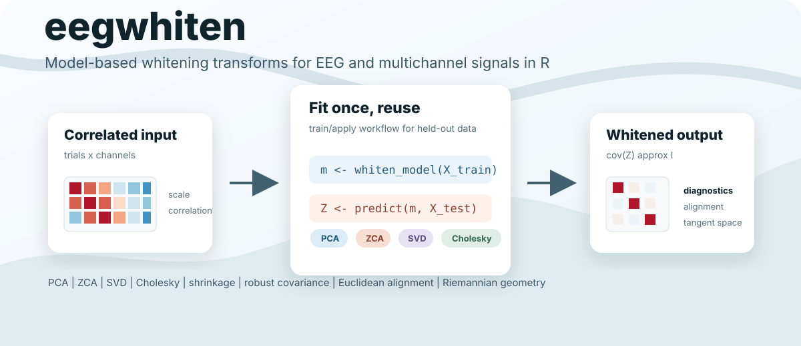
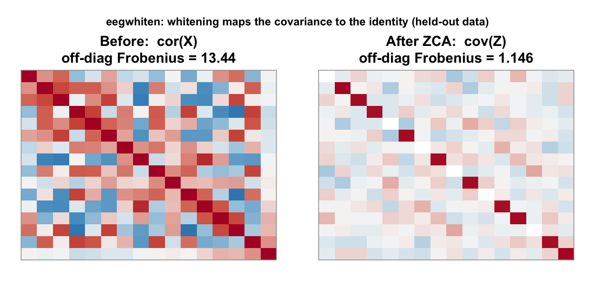
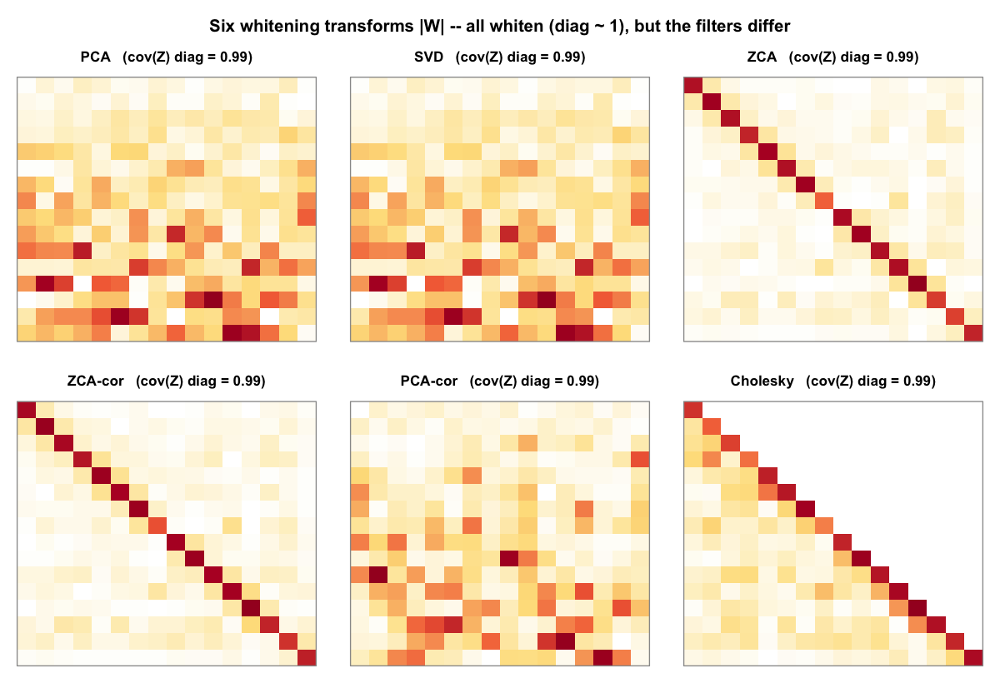
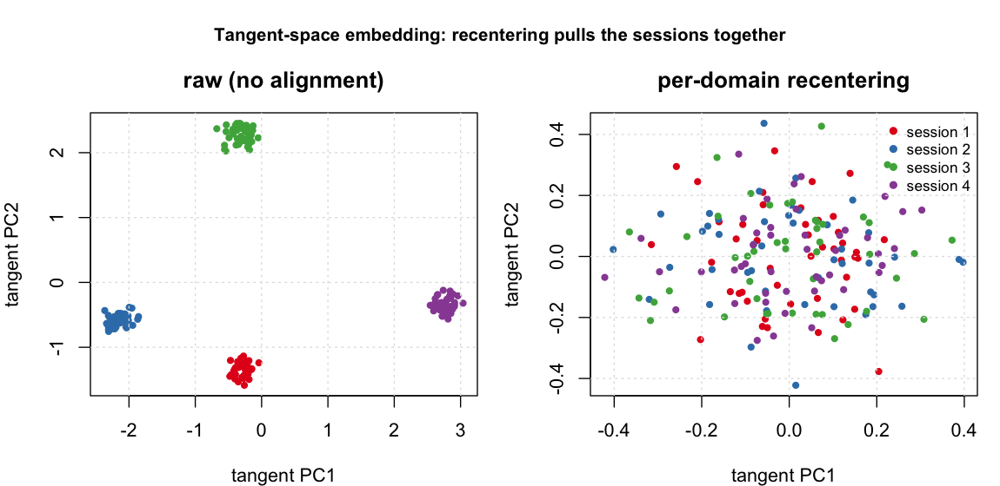
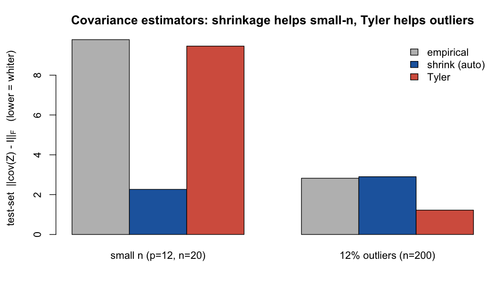

Whitening transforms for EEG and multichannel signals using a model-based API: fit a whitening model once on training data, then apply the same transform to validation/test data. Rows are trials, epochs, or samples; columns are channels or features.
Core capabilities:
- Reusable whitening models with inverse transforms and diagnostics.
- Six transforms:
PCA,PCA-cor,ZCA,ZCA-cor,SVD, andCholesky. - Shrinkage, robust covariance estimators, dimensionality reduction, tuning, and reporting.
- Cross-session tools: Euclidean alignment, per-domain recentering, Riemannian tangent-space mapping, and relative/generalized-eigenvalue whitening.
Installation
# install.packages("devtools")
devtools::install_github("Yiming-S/eegwhiten")For local development:
# install.packages("pkgload")
pkgload::load_all(".")Quick Start
library(eegwhiten)
set.seed(42)
X_train <- matrix(rnorm(300 * 16), 300, 16)
X_test <- matrix(rnorm(120 * 16), 120, 16)
colnames(X_train) <- paste0("Ch", 1:16)
colnames(X_test) <- colnames(X_train)
# Fit whitening model on training data
m <- whiten_model(
X_train,
method = "PCA",
var_threshold = 0.95,
lambda = "auto",
lambda_method = "oas"
)
# Apply to new data
Z_test <- predict(m, X_test)
# Diagnostics
diag <- check_whitening(Z_test)
diag$diag_mean
# Inverse transform (approximate if reduced)
X_test_rec <- unwhiten(m, Z_test)Why whiten?
Electrodes that sit near each other pick up a lot of the same signal, so EEG channels are usually heavily correlated, and a few channels carry far more variance than the rest. Feed that raw data into a distance-based method, a clustering step, ICA, or many classifiers, and those few loud, redundant channels quietly take over. “Distance” ends up meaning something different in every direction.
Whitening is a single linear transform that fixes both problems at once. It rescales every direction to the same variance and removes the correlation between channels. Picture the data as a stretched, tilted cloud of points; whitening turns it into a round ball of unit size, where every direction counts equally and the channels no longer track each other. In numbers, the covariance becomes the identity matrix (that is the before-and-after picture in the gallery below).
Why that helps:
- Distances and linear models stop being skewed. Whitening is the same operation as switching from plain Euclidean distance to Mahalanobis distance, which accounts for scale and correlation. Nearest-centroid, k-means, k-NN, and linear classifiers all behave better on whitened features.
- It is the standard first step for ICA, CSP, and Riemannian pipelines, which assume equal-variance, decorrelated inputs.
- It helps models carry over between sessions and subjects. Every recording has its own electrode contact, noise, and montage, which shows up as a differently shaped covariance. Whitening each recording onto a common footing removes much of that nuisance difference, so a model trained today still works on tomorrow’s session (the alignment figure below shows this).
- It keeps the numbers stable. Decorrelated, equal-scale features are easier for the linear algebra and the optimizers that come next.
Put simply: whitening clears away the redundant structure (scale and correlation) so the patterns you actually care about, and whatever you run next, get a fair and stable start.
Features
- Multiple whitening methods:
PCA,PCA-cor,ZCA,ZCA-cor,SVD,Cholesky - Shrinkage regularization with manual
lambdaorlambda = "auto"(oas/lw) - Shrinkage targets: scaled identity or
diagonal(preserves channel variances) - Dimensionality reduction via
n_comporvar_threshold - Weighted fitting with
sample_weight; non-finite handling viana_action - Robust covariance estimation:
empirical,tyler,mcd(requiresrobustbase) - Incremental updates with optional exponential forgetting:
whiten_model_update(..., decay) - Batch modes: independent, shared model, EA alignment, and per-domain
recenter - Cross-session helpers:
recenter(), andpredict(..., self_center = TRUE) - Riemannian pipeline:
epoch_covariances(),tangent_space(),untangent_space() - Relative / generalized-eigenvalue whitening (CSP/xDAWN-style):
whiten_relative() - Spatial filters and forward patterns:
whitening_patterns() - Automatic hyperparameter tuning with an analytic fast path:
auto_tune_whitening() - One-click markdown report:
report_whitening()
At a glance
Whitening maps the covariance to the identity (shown on held-out data), and the six methods achieve it with visibly different transforms:


For cross-session / cross-subject data, per-domain recentering pulls the sessions together in the Riemannian tangent space:

Shrinkage and robust covariance estimators keep whitening stable when the sample is small or contaminated:

All figures are reproducible with Rscript tools/make-figures.R.
Core APIs
1) One-shot whitening
res <- whiten_matrix(X_train, method = "ZCA", lambda = 0.1)
Z <- res$Z2) Fit/transform workflow
m <- whiten_model(X_train, method = "PCA", n_comp = 8, lambda = 0.05)
Z_train <- predict(m, X_train)
Z_test <- predict(m, X_test)3) Incremental update without full refit
X_new <- matrix(rnorm(80 * 16), 80, 16)
m <- whiten_model_update(m, X_new)Advanced Usage
Weighted fitting + robust covariance
w <- rexp(nrow(X_train), rate = 1) + 0.1
m_w <- whiten_model(
X_train,
method = "ZCA",
lambda = 0.1,
sample_weight = w,
cov_estimator = "empirical"
)
m_tyler <- whiten_model(
X_train,
method = "ZCA",
lambda = 0,
cov_estimator = "tyler"
)
# Requires robustbase
# m_mcd <- whiten_model(X_train, method = "ZCA", cov_estimator = "mcd", lambda = 0)Automatic tuning
tuned <- auto_tune_whitening(
X_train,
methods = c("PCA", "ZCA", "PCA-cor"),
n_comp_grid = c(6, 8, 10),
lambda_grid = list("auto", 0.05, 0.1),
cv_folds = 5,
scoring = "unsupervised",
seed = 123
)
best_model <- tuned$best_model
head(tuned$ranking)Batch whitening
X_list <- list(
matrix(rnorm(200 * 16), 200, 16),
matrix(rnorm(180 * 16), 180, 16),
matrix(rnorm(220 * 16), 220, 16)
)
# Independent per matrix
out_ind <- whiten_batch(X_list, mode = "independent", method = "PCA", n_comp = 8)
# Shared model from first matrix
out_shared <- whiten_batch(X_list, mode = "shared_model", method = "PCA", n_comp = 8)
# EA alignment mode
out_ea <- whiten_batch(X_list, mode = "ea", ea_mean = "logeuclid")Euclidean Alignment (EA) model API
ea <- euclidean_alignment(X_list, input = "raw", mean_method = "logeuclid")
Z1 <- predict(ea$model, X_list[[1]])
X1_back <- inverse_ea(ea$model, Z1)Cross-session recentering (per-domain alignment)
recenter() aligns each session/subject by its own covariance, mapping every domain to the identity. Unlike euclidean_alignment() (a single shared transform from the grand-mean covariance), this removes between-session shift the way Euclidean Alignment (He & Wu, 2019) is meant to.
X_list <- list(
matrix(rnorm(200 * 16), 200, 16),
matrix(rnorm(180 * 16), 180, 16)
)
# Each domain whitened to identity, independently
out <- whiten_batch(X_list, mode = "recenter")
# Single matrix
rc <- recenter(X_list[[1]])
# At predict time, center test data on its own mean (drift-robust)
m <- whiten_model(X_list[[1]], method = "ZCA", lambda = 0.1)
Z_test <- predict(m, X_list[[2]], self_center = TRUE)Riemannian tangent space
Project per-trial SPD covariances to the tangent space at a reference mean and vectorize them for a downstream linear classifier — the standard Riemannian BCI pipeline.
X_tensor <- array(rnorm(40 * 8 * 128), dim = c(40, 8, 128))
covs <- epoch_covariances(X_tensor, lambda = 0.05)
V <- tangent_space(covs, mean_method = "riemann") # [40 x p(p+1)/2]
covs_rec <- untangent_space(V) # inverse mapRelative / generalized-eigenvalue whitening
Whiten one covariance by another (e.g. signal vs. noise), the basis of CSP and xDAWN.
Online updates with forgetting
X_stream_1 <- matrix(rnorm(200 * 16), 200, 16)
X_stream_2 <- matrix(rnorm(200 * 16), 200, 16)
m <- whiten_model(X_stream_1, method = "ZCA", lambda = 0.05)
# decay < 1 down-weights past data to track non-stationary drift
m <- whiten_model_update(m, X_stream_2, decay = 0.9)Tensor Data (trial × channel × time)
X_tensor <- array(rnorm(20 * 8 * 100), dim = c(20, 8, 100))
m_t <- whiten_model_tensor(X_tensor, method = "ZCA", lambda = 0)
Z_tensor <- predict_tensor(m_t, X_tensor)
X_tensor_rec <- unwhiten_tensor(m_t, Z_tensor)Reporting
Generate a markdown report for one model or a tuning result.
# Model report
report_whitening(m, data = X_train, file = "whitening-report.md")
# Tuning report (includes ranking table)
report_whitening(tuned, data = X_train, file = "whitening-tuned-report.md")Notes
-
lambda = "auto"currently supportscov_estimator = "empirical". -
whiten_model_update()currently supports models using empirical covariance moments. -
mcdestimator requires packagerobustbase. - For train/test workflows, avoid fitting whitening independently on train and test matrices.